前言
2015年，作為登山新手的我參加了商業團五日逆時針縱走，至今仍記得行前練習搭帳篷的緊張心情。當時團費7，800元（含登山伙食費）加300元環清宮住宿費，自揹85L大背包、帳篷與睡袋，負重感十足。
十年後的2025年，再次挑戰北二段，轉為極度輕量化模式，不僅裝備輕盈，行程也濃縮為一日順時針單攻。雖然百岳仍是那熟悉的四座（甘薯峰、無明山、鈴鳴山、閂山），挑戰方式與心境已截然不同，見證了自身的成長與北二段的魅力。
北二段五日行程
D1
九人隊伍含領隊，早上八點多抵達730林道11.7K處，整裝分擔公器/公糧後重新打包後，個人負重逾20公斤。下午約一點半抵達23.5K閂山登山口，卸下重裝，稍作休息後輕裝登頂首座百岳 閂山（3168公尺）。回程後前往24.5K營地，且為個人首次登山扎營體驗。
 |
閂山3168公尺。
 |
第一次野外扎營。
D2
早上7點出發，途中26K處有嚴重崩塌，大約11點50分登頂第二座百岳鈴鳴山（3272公尺），12點多抵達鈴鳴山東鞍營地，需下切溪谷取水。
註：目前路線改為高繞，避開崩塌路段，路線改由經 人待山北峰（3074公尺）及 人待山（3114公尺），路程大幅縮短，但爬升增加310公尺。
 |
當時26K處崩塌狀況。
 |
鈴鳴山3273公尺。
D3
早上6點重裝出發，今日需通過最危險的無名斷崖/峭壁。中午12點抵達無名山西峰的三米垂直斷崖，建議手臂力量不足者採人包分離方式通過。 後段破碎地形石頭鬆動，風險更高，需格外謹慎。下午4點多終於登頂。
離開山頂後約1小時後來到無名池，往前推就是今天扎營地方，順便先取今晚跟明天要喝的的水源，以前登山前輩說，沒喝過無明青草茶不算來過北二段。
 |
垂直斷崖。
 |
無名山3451公尺。
 |
無名大崩壁。
D4
今日需從海拔3000多公尺下降至2000公尺以下的耳無溪營地，行程距離最長，因此清晨天亮即出發。先經過鬼門關峰，隨後下攀鬼門關斷崖。 若有兩條繩索，務必雙繩並用；若僅一條繩，建議抓緊樹根或岩石，分擔受力，降低風險。
 |
鬼門關斷崖其中一段。
 |
另一處斷崖領隊在下面指導。
約10點半抵達甘薯南峰營地，稍鬆一口氣後，輕裝往返甘薯峰（3158公尺）。隨後經遠多志山（2888公尺），最終下抵耳無溪營地（海拔約1940公尺）。營地水源充足，無溪水過高風險，但因下午6點多天色漸暗， 選擇直接在溪床扎營，雖便利卻存潛在風險。
 |
甘薯峰3158公尺。
D5
昨晚因溪床地勢不平，睡眠品質不佳。原本攜帶的個人帳篷僅在第一天使用，之後都與兩位隊友共用四人帳，多少增進隊友間的默契。清晨起床後，四處拍攝溪邊景色，平靜的溪水讓人完全感受不到涉溪的風險，心情也隨之放鬆。
早餐後，隊伍開始今日挑戰——爬升回海拔2600公尺的730林道。雖然這段路程對連日跋涉的我們來說不算輕鬆，但相較於前幾天的斷崖與破碎地形，這已不算什麼大難關。陽光灑在林道上，伴隨清新的空氣與鳥鳴，步伐雖沉重卻充滿完成目標的期待。
| 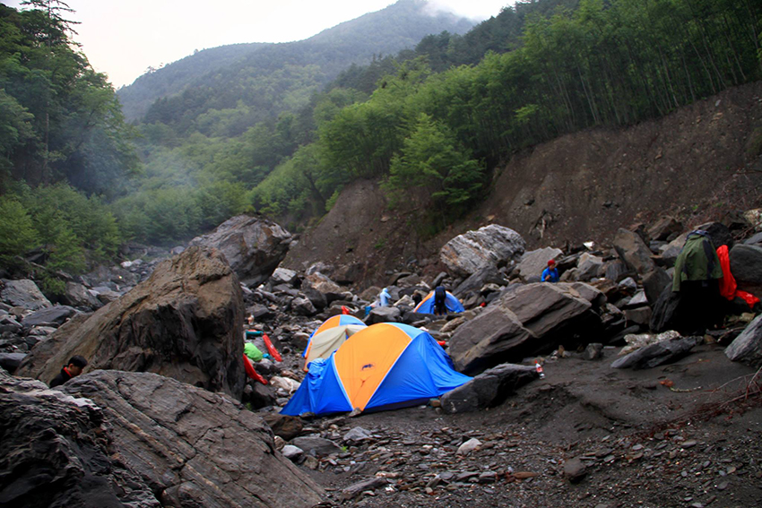 |
耳無溪營地狀況。
| 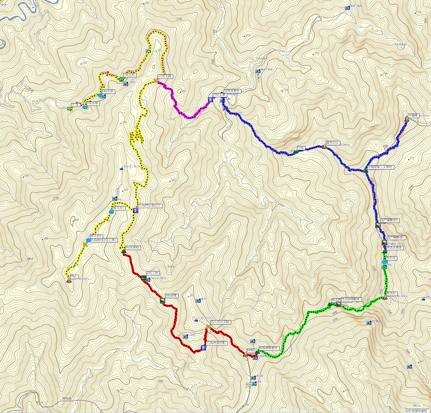 |
此次行程隊友分享全程分段軌跡圖。
北二段一日行程
這次行程波折重重，自2023年開始規劃，歷經八次取消，期間遭遇天氣惡劣、颱風侵襲、林道崩塌等諸多挑戰，行程一再受阻。隊員組成也歷經多次更替，14人分乘兩車，後因第八次取消縮減至7人，出發前因天氣評估又減少2人。隊員中包含一位曾共同攀登的山友，其餘則為之前一起爬過山的隊友推薦，均通過能力審查與天氣評估等嚴格篩選。
| 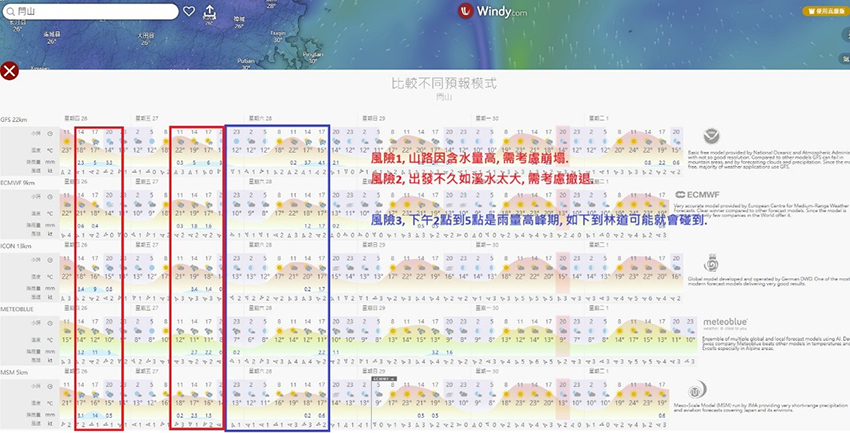 |
出發前二天，天氣評估。
因多次因雨取消的經驗，這次調整出發時間，由凌晨00:00提前至前一天22:00從林道出發。路線也改為「順時針（甘無鈴閂）」，從易到難，預估上河五折時間為19小時18分，較原「逆時針（閂鈴無甘）」的17小時48分略長。
前一天下午從台北前往環山部落環清宮途中，遭遇暴雨、公路落石與積水；另三位從合歡山大禹嶺來的隊友亦受影響。幸好，所有隊友均提前於晚間九點在環清宮集合。
第一座百岳: 甘薯峰3158公尺04:39登頂
出發與林道
從環清宮至730林道（11.7公里），車程約1小時。林道狀況惡劣，路面落差大，遍布坑洞、石頭與陡坡，強烈建議避免自駕，專業接駁車為佳。22:00準時出發，去年颱風大雨造成大崩塌取消一次行程。剛開始走錯一直向上，但馬上發現無路跡處立即下切腰繞，繞過倒木後沿山友踩踏路徑前行，路況尚可。
過溪與補給
抵達下切叉路，過溪時水深僅及腳踝，整體順利。兩位隊友補水，其餘全自揹。個人補給清單：
• 水500cc
• 舒跑590ml×2
• 泰山十穀寶330g×2
• 崇德發黑麥汁250ml×2
• 牛奶粉（林道活水沖泡500cc）
• 保礦力粉、鹽糖、咖啡錠
過溪建議：脫下鞋襪過溪，後續行走更舒適。我 已穿五指襪，有效減少腳濕磨腳問題。
| 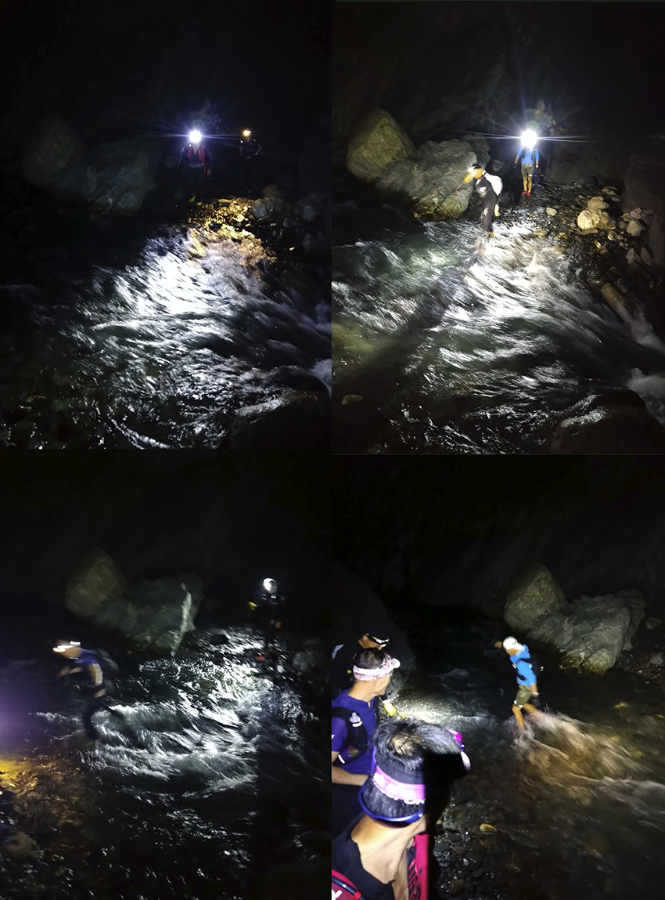 |
過“耳無溪”。
甘薯南峰營地與登頂
抵達甘薯南峰營地後，輕裝前往，所以將所攜帶易開罐全拿出來，穿上防水外套，開始穿越箭竹林。葉面水珠使雙手凍僵，水沿又外套流入內褲與鞋子，僅一位隊友穿雨褲避免濕身。登頂後返回營地，開吃補給。個人策略偏好液體補給，優點為：
1. 補給越吃越輕，減輕負重。
2. 避免攜帶太多乾糧補給，因需配水食用，來降低缺水風險。高山上無水時，乾糧難以下嚥，影響續航力。
| 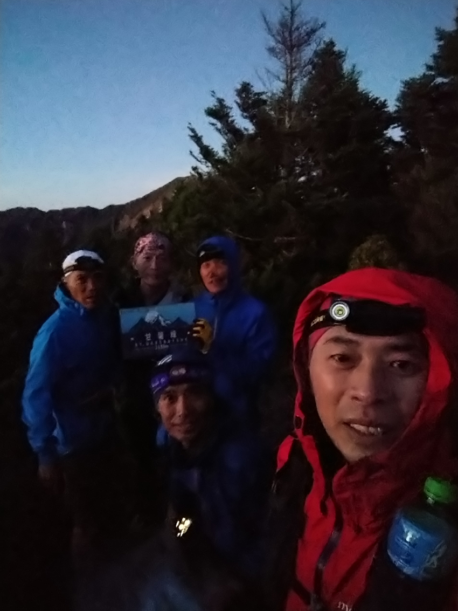 |
完成第一座百岳。
| 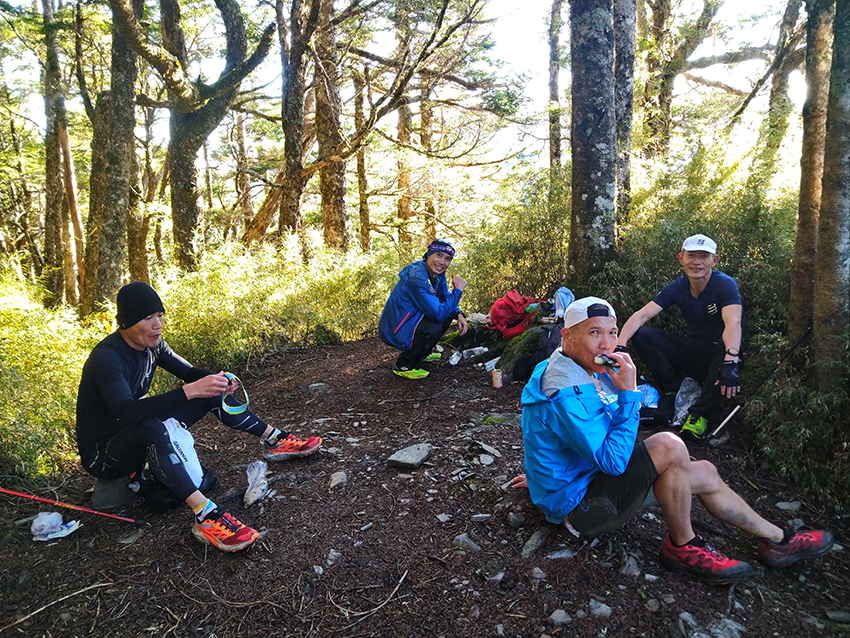 |
回甘薯南峰營地補給。
第二座百岳:無名山3451公尺08:21登頂
撤退點與行程推進
設定清晨6點前返回甘薯南峰營地作為撤退點，團隊順利達標，遂繼續朝下一山頭前進，目標為鬼門關峰（3395公尺）。
鬼門關峰攀登
鬼門關峰斷崖崩壁地形險峻，相較下山，上攀更為安全，因腳力普遍強於手力。加上我們是採單攻輕裝策略，攀登斷崖僅需手腳並用，過程相對安全。登頂時恰逢日出，景色壯麗，中央尖山清晰可見。
無明池與衝頂
登頂後穿越箭竹草原，很快抵達無明池。無明池水源黑無人想停留補水，選擇直衝山頂拍照留念，保持高效推進。
| 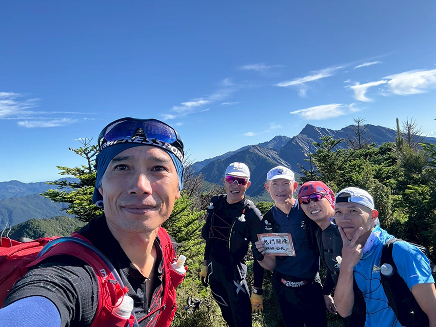 |
鬼門關峰合照。
| 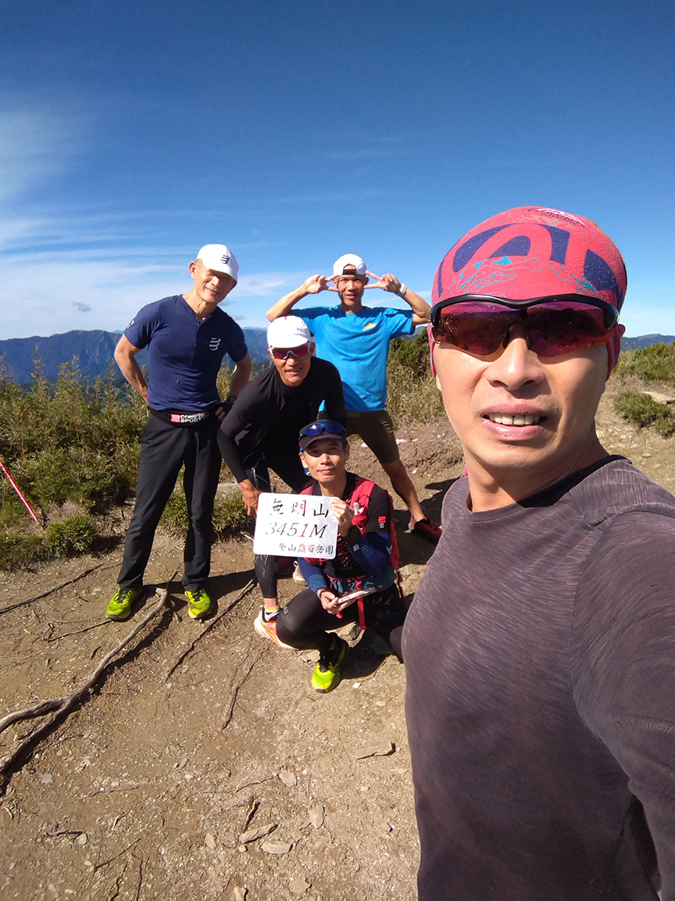 |
完成第二座百岳。
第三座百岳:鈴鳴山3272公尺13:10登頂
最危險路段
北二段順時針縱走中最具挑戰的路段為無名山後的斷崖與崩壁地形。最大風險來自上方隊友可能踢落的石塊，且部分踩點隱藏不可見，需先以手力撐住身體，對手臂力量要求較高。
安全策略
• 間隔下行 ：建議隊友下到底部後再接續下降，留時間讓前方隊友尋找躲避落石的安全位置。
• 裝備建議 ：未來攀登者可考慮配戴岩盔以提升安全性。
• 輕裝 ：強烈不建議重裝順時針縱走，因斷崖與崩壁地形持續崩塌，極易導致手腳無力，增加風險。
| 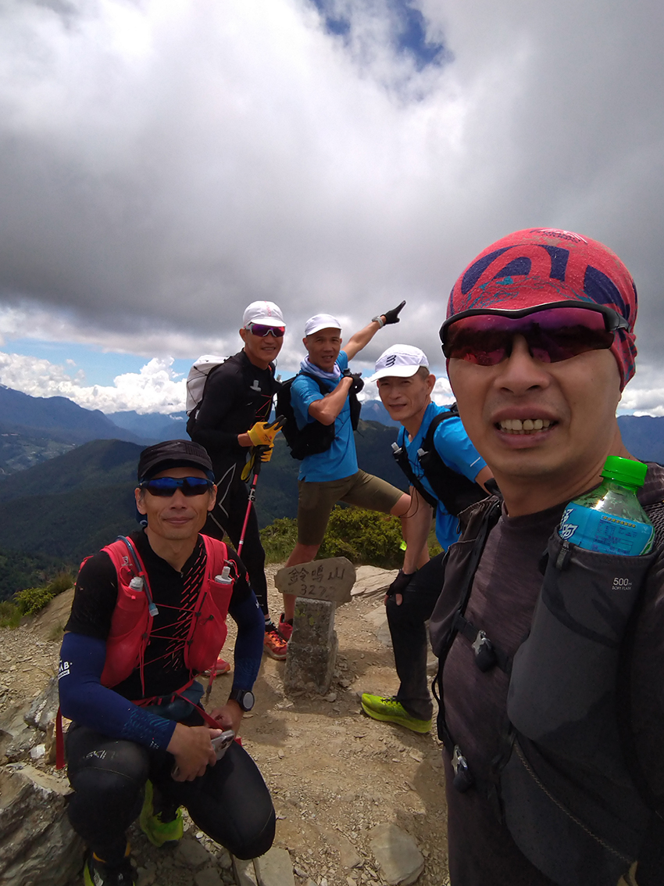 |
完成第三座百岳。
第四座百岳:閂山3168公尺16:11登頂
路線變更
最後一座百岳與十年前體驗大不相同。原路線從25K工寮腰繞至27.5K林道，但因26K處嚴重崩塌，現改為直接上切「人待山」及「人待山北峰」，再沿「金明真路」下行。金明真路坡度較大，但路徑清晰，距離較短。
心境與耐力
最後百岳總覺遙遠，特別在草坡遠眺山友下行時，易生厭世感。然而，持續前行終能抵達，此時正是考驗耐力的關鍵時刻。閂山岔路口如下圖:
| 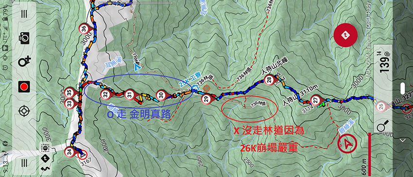 |
| 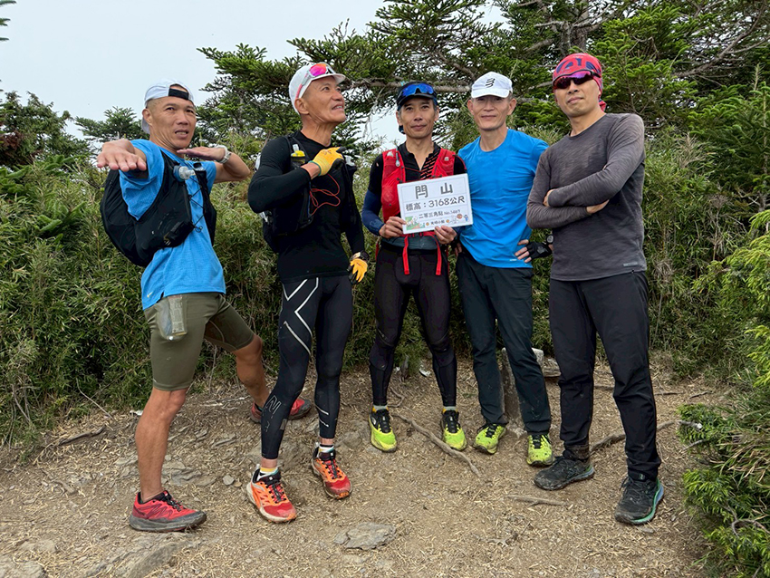 |
完成第四座百岳。
返程失誤
從出發前左上眼皮一直跳動，想說整個行程還算順，除了一隊友在下坡時手有點脫臼，因此後面速度有放慢，登頂閂山後自己拉到後面陪受傷隊友走，途中一直在想怎縮短路程，因為產生了第一個失誤(浪費1個多小時)，而自己也搞錯路徑雨量計前，而不是雨量計後，隔天跟隊友確認他們沒有看到雨量計就下切了，往好處想我們解鎖北二雨量計。
路徑釐清
| 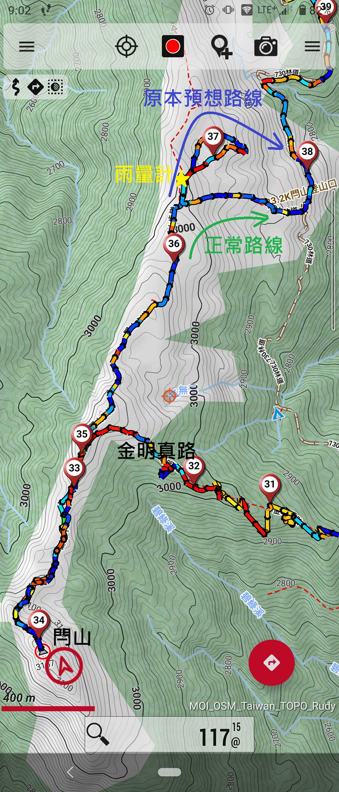 |
解鎖雨量計。
| 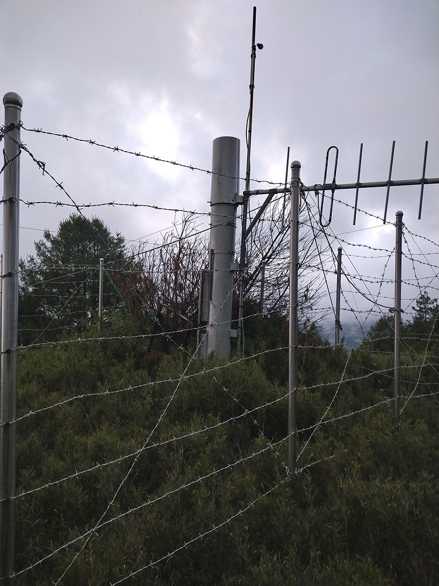 |
第二個失誤(浪費1個多小時)，有點鬼打牆，因為沿著730林道走會碰到一個高繞標示，然後拉一條紅線，然後會很直覺的往高繞走，走上去後又有很明確的布條，照著走後又會回到730林道，然後再確認軌跡方向走又回到高繞標示，那時跟隊友都矇了，直接拿著手機一直對，走上走下至少二次確認高繞還有沒其它路線，最後直接走過紅線才確認路線。
第三個失誤快接近730林道11.7K要過最後一條河流時，明明有看到等我們的接駁車的燈光，但當時不知水管破裂整個林道變水路，但這次真的算鬼打牆，怎繞都繞到河道去，想往左切回林道找不到切回點，所以一直在那打繞，因為當時看林道在我們上方但又找不到切上去的路，所以直接又跟第二個失誤點“高繞”聯結在一起，加上腦海裡浮現沿著河道走，只會越來越下切到高度落差，因此不敢走下去，最後隊友直接打電話給已經到的隊友來接我們出去，解除了這場危機。
| 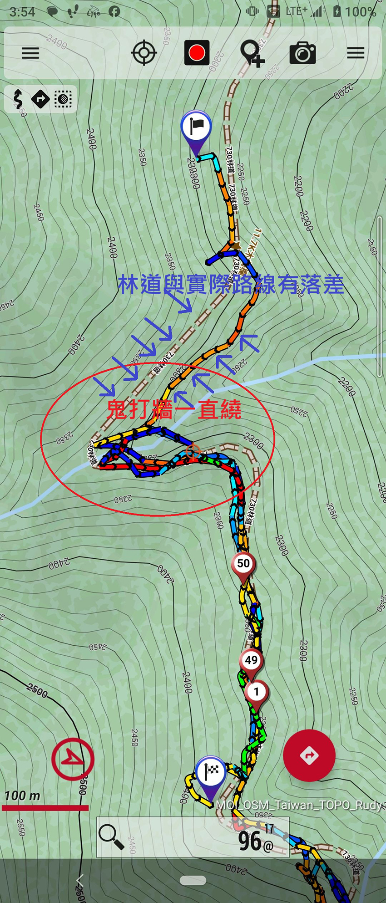 |
最後出去軌跡圖。
| 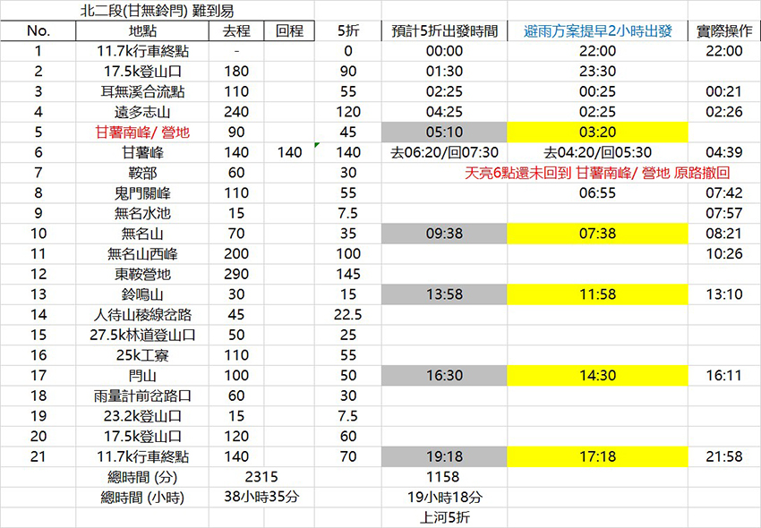 |
計劃時間 VS. 實際操作。
記錄
20250628 北二段（順時針縱走）距離：50.5公里，總時間：23小時58分 爬升：4426公尺，下降：4372公尺
22：00 登山口730林道11.7K
23：02 廢棄機車
00：21 過 “耳無溪” 溪水過腳踝
02：26 遠多志山2880公尺
04：39 甘薯峰3175公尺（百岳）
05：56 返回丟包叉路口
07：42 鬼門關峰3395公尺（285岳）
07：57 無明池
08：21 無明山3451公尺（百岳）
10：26 無明西峰3332公尺（285岳）
13：10 鈴鳴山3272公尺（百岳）
13：51人待山3114公尺（285岳）
14：04 人待山北峰3074公尺（285岳）
16：11 閂山3168公尺（百岳）
17：42 走過 “雨量計” 後原路繞回
19：34 廢棄機車
21：58 登山口730林道11.7K